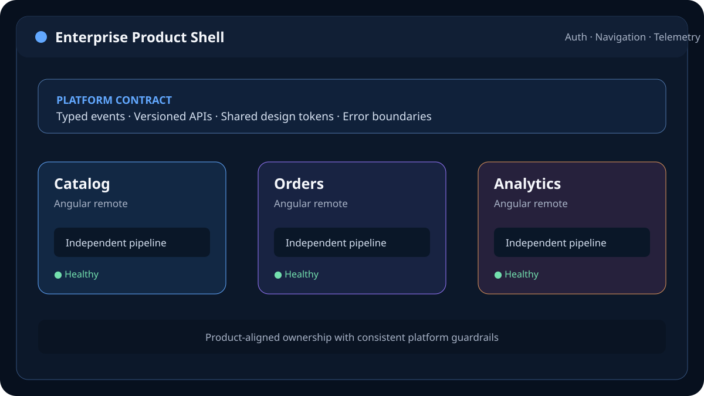

Technologies used
- Angular and TypeScript
- Webpack Module Federation
- RxJS and NgRx
- Design tokens and shared UI primitives
- REST APIs and OAuth/OIDC
- CI/CD pipelines and automated quality gates
Frontend architecture case study
An Angular Micro Frontend Architect's platform approach for decomposing a tightly coupled application into product-aligned modules that teams can build, test and release independently.

The target platform served several business capabilities through one Angular codebase. As features and teams increased, the release process became a shared bottleneck. The proposed micro frontend model retained a coherent customer experience while giving each product domain an explicit technical and delivery boundary.
The work focused on architecture and enablement: identifying boundaries, defining integration contracts, protecting runtime stability and creating a migration path that did not require a high-risk rewrite.
Every frontend change passed through the same repository and coordinated release. Teams could not deploy a low-risk feature without waiting for unrelated work, and changes to shared dependencies could create broad regression risk. Ownership was blurred because technical folders did not map cleanly to business capabilities.
The business needed faster, safer delivery without fragmenting navigation, accessibility, authentication or visual standards.
The Angular shell owned top-level navigation, authentication context, route orchestration, error boundaries and global observability. Product-aligned remotes owned their internal screens, local state and deployment cadence. This kept platform responsibilities centralized without rebuilding a monolith inside the shell.
Remotes communicated through typed navigation events, versioned API models and a small platform SDK. They did not read another remote’s store. Angular and other runtime-critical dependencies were configured as compatible singletons, while shared UI foundations followed a documented release policy.
Existing routes moved one capability at a time. Each migration introduced a remote entry, contract tests, a fallback experience and an independent pipeline. Feature flags allowed controlled rollout and fast rollback while the original route remained available during validation.
Challenge: Independently deployed modules could load incompatible framework or shared-library versions.
Solution: A compatibility matrix, singleton rules, automated contract checks and a planned upgrade window made version changes visible before release.
Challenge: A global store would silently couple teams and release cycles.
Solution: Each remote owned its state. Durable cross-domain data flowed through APIs; short-lived UI coordination used typed platform events.
Challenge: Team autonomy could produce visual and accessibility drift.
Solution: Shared tokens, tested primitives, automated accessibility checks and platform-level performance budgets provided guardrails without centralizing feature delivery.
The architecture created measurable delivery indicators without exposing confidential business data:
Exact employer metrics are intentionally omitted. In a production rollout, the primary measures would be deployment frequency, lead time, rollback rate, remote-load failures and Core Web Vitals by route.